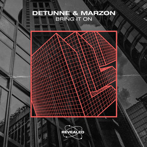
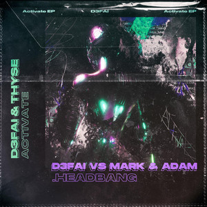
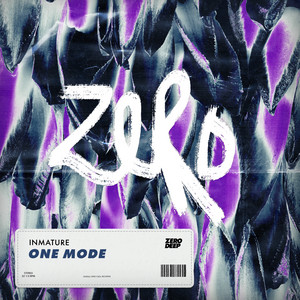
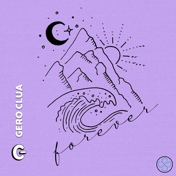
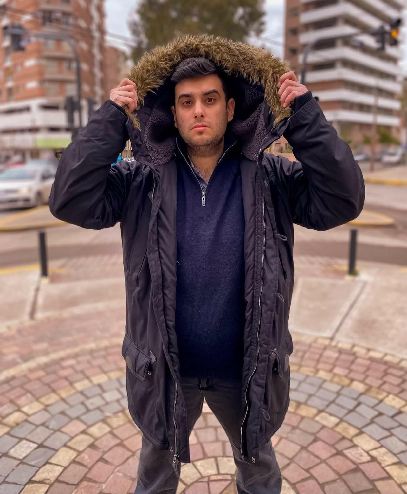

Sabemos lo importante que es tener un excelente sonido en tus producciones para que los grandes sellos
discográficos se interesen en tus tracks.
Somos un grupo de Productores y Técnicos del audio especializados en Música Electrónica y Géneros Urbanos.
Somos Trébol Music
Nuestros Servicios
Mezcla
El proceso de Mezcla consiste en tener una perfecta armonía entre los elementos de una canción,
generar diferentes climas y sensaciones mediante técnicas creativas que hagan que la canción
cobre más vida y se escuche profesional
Mastering
El proceso de Mastering pretende terminar de detallar la sonoridad que el Artista o Productor
quería, así como también generar un volumen competitivo y adecuado para la distribución en las
plataformas digitales
Procesos Vocales
Las vocales son fundamentales en una mezcla, y para que se escuchen correctamente se requiere de
procesos como Compresión, Ecualización, Deesing, Efectos de espacialidad (Reverb, Delay, Echo)
Ghost Production
Nuestro equipo de productores puede crear una canción completa desde 0 para vos, cumpliendo con
todos los requisitos que desees para que tengas una pieza única! También podemos partir desde
una muestra de melodías, vocales o drums que te hayan gustado!
El estudio
Nuestro estudio cuenta con 2 Control Room para que tú música se escuche con la mejor calidad.
Control Room 1
Monitores de Estudio Adam A7X
Interfaz de Audio Audient ID44
Auriculares Abiertos Sennheiser HD700
Microfono PBM U87
Control Room 2
Monitores de Estudio Yamaha HS5
Interfaz de Audio Focusrite 2i2
Auriculares AKG 77
Microfono PBM U87
Discografía

Detunne & Marzon - Bring It On

D3FAI & Thyse - Activate

Inmature - One Mode
NAZ - Amor Toxico (Prod. Donna)
Khus - Ya No

Gero Clua - Forever
El equipo de Trebol Music

ALAN O'SHEE
Fundador de Trébol Music y Trébol Music Academy
Técnico en Grabación y Post Producción de Audio, Especialista en Mastering, Cantante y Productor.
Activo emprendedor y educador, ha incentivado a cientos de productores y artistas a mejorar su
performance dentro y fuera del estudio de producción. Desde 2012 hasta hoy ha estado abocado al
mundo del audio, experimentando y viajando por distintos géneros musicales. A lo largo de su
carrera, ha trabajado en proyectos de Música Electrónica, Trap, Reggaeton, RKT, Cumbia,
Salsa,
Rock, Rap, Baladas, entre otros. Aunque puede trabajar en los procesos Grabación y Mezcla,
actualmente se especializa en el proceso de Mastering, llevando las producciones a niveles
sonoros competitivos y enriquecedores. Sus mastering han tocado grandes labels de Música
Electrónica como Revealed, Dim Mak, Zero Cool, Soave Records, Seal Network, Nick Cooper,
ArchangelUK Recordings, Chakra Records, Trap Town Records, Bass In Your Face Records, Pocket
Stars Music, entre otros. También está encabezando el proyecto de Trébol Music como su
propio
label, donde varios Productores/Dj´s han lanzado sus tracks en la plataforma. Pretende ir
poco a
poco generando un gran label de renombre en la escena local e internacional.
JULIAN REINALDO
DJ & Productor de Trebol Music
Julián Reinaldo AKA Detunne, DJ & Productor de Trebol Music, inició su trayectoria en la música
electrónica en el 2017.
Gracias a su sonido característico, Julián consiguió el reconocimiento de varios artistas como:
Hardwell, KSHMR, Martin Garrix, Afrojack, entre otros.
También ha logrado firmar en Revealed Recordings (Label de Hardwell) & Sony Music haciendo
llegar su
música a Tomorrowland, Ultra Japón y distintos Radio Shows cómo el de Blasterjaxx, Bassjackers,
Knife Party y Showtek.
FACUNDO TISCH
DJ & Productor de Trebol Music
Conocido artísticamente como TISCH, nació en el año 2003. Inicio su pasión por la música desde
muy
chico, introduciéndose de lleno en este mundo en el 2014, rápidamente comenzó a demostrar
grandes
habilidades en este ámbito. Actualmente se dedica a producir música electrónica y urbana.
Trébol te recomienda estas Playlists para acompañar tu día